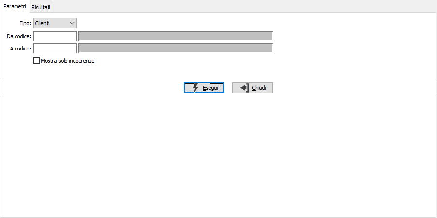
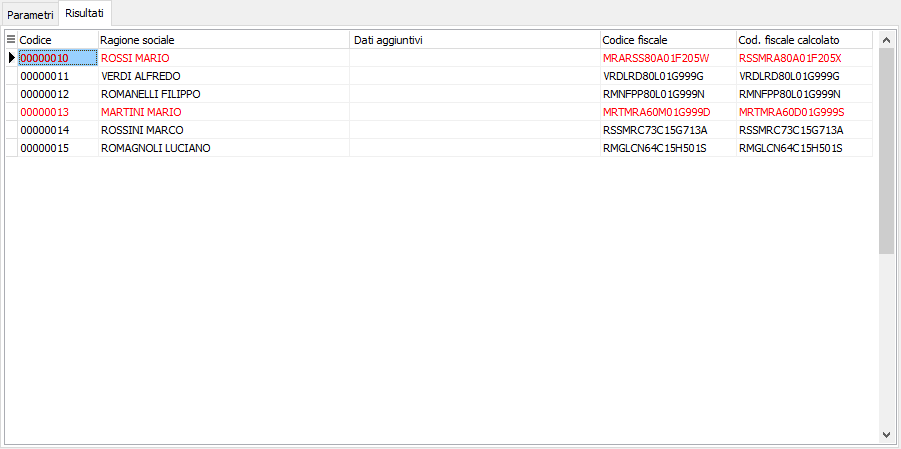

Controllo codice fiscale clienti/fornitori
La procedura effettua un controllo dei codici fiscali clienti/fornitori; il controllo viene effettuato su clienti, fornitori se è spuntato il flag Privato ed i campi "data di nascita", "Provincia di nascita", "Comune di nascita", "Sesso" e "Ragione sociale" sono tutti compilati; per il percepente se "Persona fisica" anche il campo "Dati aggiuntivi".
Per calcolare il codice fiscale viene ricercato il nome e cognome utilizzando questo procedimento: se il campo "Dati aggiuntivi" è compilato viene assunto come nome (da usare se si ha più di un nome) e la ragione sociale come cognome, altrimenti nella ragione sociale viene cercato lo spazio più a destra la parte a sinistra è il cognome e la parte a destra il nome. Il codice del comune viene ricercato nella relativa tabella Comuni per descrizione e provincia. Non sono gestiti i casi di omocodia.

La finestra dei risultati evidenzia in rosso i codici fiscali che non risultano uguali al codice ricalcolato; tramite il doppio clic del mouse è possibile accedere alla relativa anagrafica.
Tramite i tasti Anteprima e Stampa della toolbar è possibile effettuare la stampa di quanto visualizzato.
